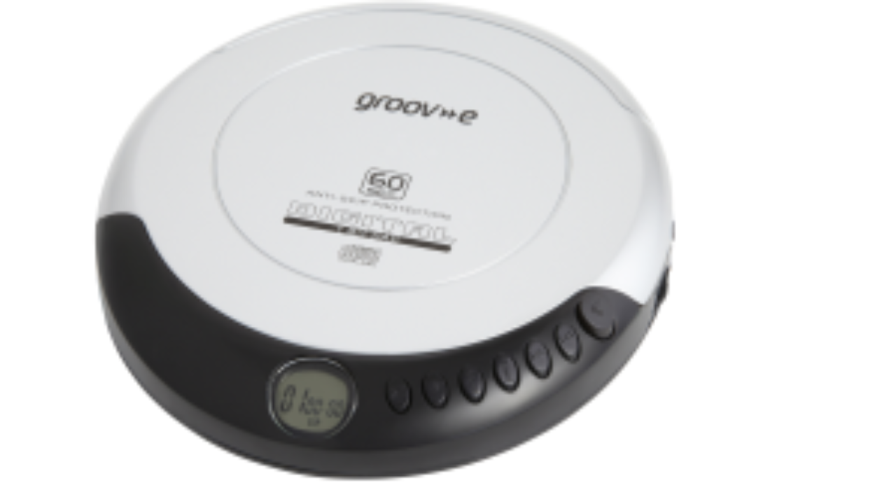

Et bilde av en iskremkule kan variere i størrelse, men samtidig være sann i størrelsen.
En CD-spiller kan kun være i en bestemt størrelse for å fungere, så det vil være usanne størrelser. Det er imidlertid ikke iskremen.
Det er objekter der bilder kan være i "usanne" størrelser, mens de også er sanne og fungerer i forhold til objektene der bildene er falske fordi objektene bare fungerer i en viss størrelse.

Du har da to forskjellige posisjoner i kategorien størrelser:
1. Størrelsene er illustrert, som kan variere størrelsen.
1.1 Men avhengig av illustrasjonen av objektet er det bare en reell størrelse; her igjen, avhengig av størrelsen på om objektet er basert på den justerbare (iskremen) eller finnes i bare en størrelse (cd-spilleren).
2. Størrelser som ikke er illustrasjoner, men som er av en viss størrelse eller basert på en størrelse (justerbar).
Størrelsen på planeter?
Er planeter gjengitt med en gjennomsnittlig størrelse?
(Det er her jeg stiller deg et spørsmål, og du kan revurdere dem?)
Et annet eksempel:
Mål 1: Er det objekter i en usann størrelse fordi de forholder seg til en gjengitt gjennomsnittlig størrelse. Se på mikrobrikken som er montert i de elektroniske enhetene våre.
Mål2: Er det objekter i justerbare størrelser på grunnlag av deres grunnleggende opprinnelse. Se på skogens planter og trær.
Alt / hva som helst kan være i forskjellige størrelser. Det er akkurat slik de vil oppføre seg i vårt fysiske miljø, som et elementært og fordelaktig objekt.